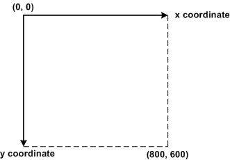

Προγραμματισμός ΙΙ: Γραφικές Εφαρμογές


Προγραμματισμός ΙΙ
Γραφικές Εφαρμογές
Γραφικά
- Στην Java μπορούμε να χρησιμοποιήσουμε βιβλιοθήκες όπως την swing και awt ώστε να δημιουργήσουμε
γραφικές διεπαφές.
- Η awt είναι η πρώτη βιβλιοθήκη γραφικών που φτιάχτηκε για την Java ενώ η swing
είναι η πιο πρόσφατη.
- Υπάρχουν εργαλεία όπως το NetBeans που διευκολύνουν την χρήση γραφικών (drag & drop).
Χρήσιμες μεθόδοι AWT
- Σχεδίαση ευθείας γραμμής: drawLine(int x1, int y1, int x2, int y2)
- Σχεδίαση παραλληλογράμμου: drawRect(int x, int y, int width, int height)
- Σχεδίαση παραλληλογράμμου με χρώμα: fillRect(int x, int y, int width, int height)
Παράδειγμα drawRect

Παράδειγμα
Το κέντρο του τετραγώνου είναι (99,89) και έχει πλευρά μήκους 38.
drawRect(int x, int y, int width, int height);
x = ?
y = ?
width = ?
height = ?
Παράδειγμα
x = 80
y = 70
width = 38
height = 38

This work is licensed under a Creative Commons Attribution-NonCommercial-ShareAlike 4.0 International License.